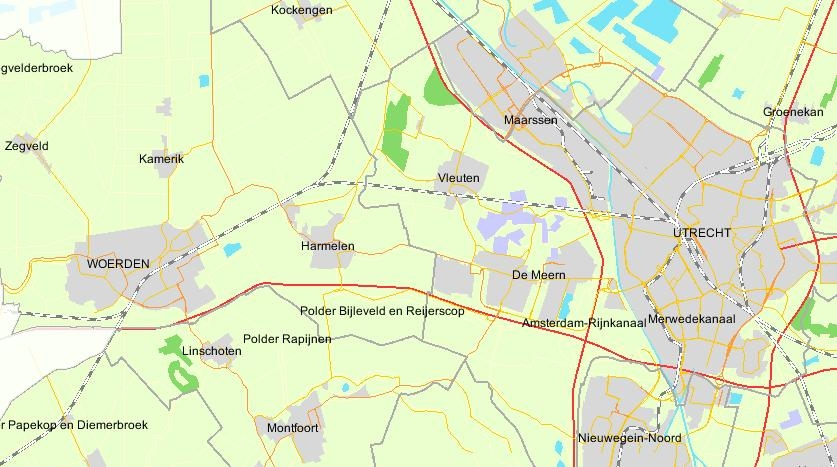

A huge opportunity for genuine fieldwork and testing arose when in the mid nineties
the town of
Harmelen got into a redesigning process of local government. The idea of the central government of
the Netherlands was to decrease the number of small villages with their own local government by
joining up several small villages or combining larg(er) towns with surrounding small villages. I
happened to live in Harmelen at the time. It is a small town (7000 inhabitants) between the larger
cities of Utrecht and Woerden.

Following
the general valuechain
the following questions could be posed, tested and relevant issues
observed in a better way then any laboratory setup could provide. Even more: this constituted a
huge opportunity to study in the complexity itself, along with emergent factors, while still testing
the validity of the value chain based on the reversed application of it.
- What result was aimed for, and by
whom?
- What behavior was consistant with
the result aimed for, and what not?
- What cultural aspects were dominant
in the selected behavior and aimed result?
- What rationelle was dominant in 'justifying',
and what rationelle was disguarded, in establishing
content and process for achieving the goal (result)?
- What emotions,
if any, drove the entire chain, process and content and were these dominant
indeed?
At the first onset